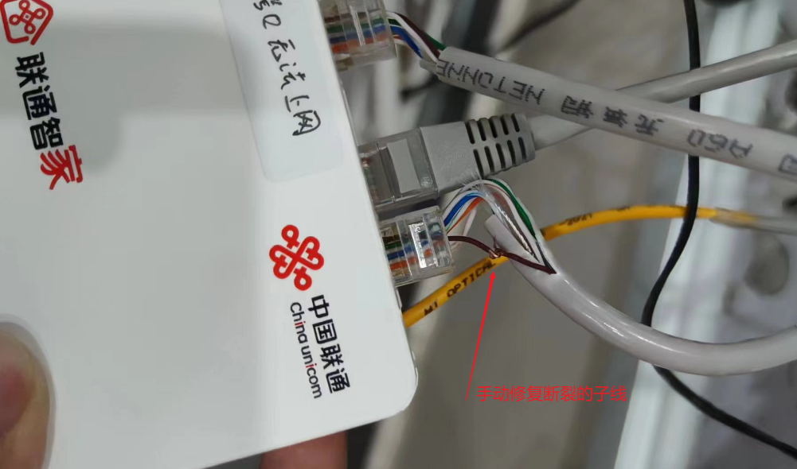

新安装的千兆入户光纤，为何测速仅达百兆？
文章目录
想要家里的网络快如闪电？关键在于了解网线的选择、光猫和路由器的配置，还有那些不起眼的小细节。这篇博客将带你轻松了解如何用六类网线打造千兆网络，以及如何通过简单的设备检查和配置，确保你的网络速度不受束缚。让我们一起探索，让家里的网速飞起来！

第一章：深入剖析网络传输介质
当我们谈论实现千兆网络接入时，承载信息高速传输的载体——网线起着至关重要的作用。下面将对五类、六类和七类网线进行详细的解读：
1. 五类网线（CAT5）
五类网线，也称为CAT5，是较早普及的一种双绞线类型，每对线芯通过精密的螺旋结构设计来减少串扰。它主要适用于10/100Mbps的快速以太网，最大传输频率约100MHz，虽然在过去曾广泛应用，但对于当前追求千兆乃至更高速度的需求而言，五类网线由于物理限制无法满足要求。
2. 六类网线（CAT6）
随着技术发展，六类网线应运而生。相比五类网线，六类线材采用了更严格的制造标准和更先进的结构设计，显著提高了抗干扰能力和传输效率，可支持高达1Gbps的传输速率，并且在理想条件下，传输距离可以达到100米，这恰好符合千兆网络的接入需求。
3. 七类网线（CAT7）
七类网线则代表着当前双绞线技术的尖端水准。它不仅在传输速率上有飞跃式提升，理论上可支持最高10Gbps的超高速率，而且在设计上加入了完整的屏蔽系统，包括每个线对之间的屏蔽以及整体外层的屏蔽，从而极大地降低了外部电磁干扰和近端串扰，保障了数据传输的稳定性与准确性。不过，七类网线主要用于未来的万兆以太网或者特定的高要求场景。
在搭建千兆家庭网络环境中，为了充分释放千兆光纤的潜力，选用六类网线是最为经济且高效的选择。同时，确保所有连接线材的质量合格，并严格按照标准接线方式操作，也是确保网络性能的重要环节。
第二章：深挖网络中枢设备——光猫、路由器LAN口带宽的影响
光猫及其LAN口带宽的重要性
光猫，全称光纤调制解调器，是家庭宽带接入的核心设备，它的功能在于将光纤中的光信号转化为数字信号，供家庭网络设备使用。对于千兆光纤用户来说，光猫是否支持千兆传输显得尤为重要。如果光猫的WAN口只支持百兆，那么即使入户光纤速率再高，也会因为这个瓶颈而被限制在百兆以内。同样地，光猫的LAN口也需要具备千兆输出能力，否则连接在其上的路由器或其他设备，无法获取到真正的千兆速率。
路由器LAN口带宽的作用
路由器的LAN口负责将接收到的数据分发到各个终端设备。当路由器的LAN口仅为百兆时，即便其他设备配置再好，也只能实现百兆速率的局域网通信。因此，在构建千兆家庭网络时，确保路由器的WAN口能够接收千兆数据，并且LAN口也能提供千兆级别的数据输出能力，这样才能使家中所有的智能设备享受到高速网络带来的流畅体验。
此外，需要注意的是，部分老旧或低端路由器可能存在LAN口速率自动协商机制，这意味着即使路由器本身支持千兆，也可能因线路、设备兼容性等原因降级为百兆模式。因此，正确配置路由器参数，启用强制千兆模式，并配合千兆交换机或直连设备，是实现全千兆网络的关键步骤之一。
在升级为千兆光纤后，务必检查并更换为千兆光猫和千兆路由器，确保所有设备接口均达到千兆级别。
第三章：潜藏之谜——一根断裂的子线如何影响千兆网络速度
子线故障与网络性能下降
在测速期间网络始终保持连接，没有出现明显的断网状况。由于是新入户部署的宽带，弱电箱里面很杂乱，时不时还在调整光猫的走线，电源接口插排的位置，偶发性出现过测速达到千兆。
依据前面的资料，我们已经分析排查了网线型号、光猫 lan 口速度，最终发现罪魁祸首竟是网线内部的一根棕色子线断裂。
断裂的原因：师傅来安装水晶头的时候，这根网线用力稍微猛了一点，导致一根子线断了一半，没有彻底断开，后续重新调整光猫位置的时候，不断的移动位置，导致彻底断裂。
六类网线八根线的功能解析
六类网线遵循TIA/EIA-568-B标准，包含八根双绞线，颜色编码如下：
- 白橙 / 橙
- 白绿 / 绿
- 白蓝 / 蓝
- 白棕 / 棕
在千兆以太网（1000BASE-T）的标准下，这八根线中有四对线同时工作，具体分工如下：
- 白橙与橙这对线（1&2），用于发送数据（Tx+/-）；
- 白绿与绿这对线（3&6），用于接收数据（Rx+/-）；
- 白蓝与蓝这对线（4&5）以及白棕与棕这对线（7&8），在千兆以太网中原本并非主用，但在某些高级应用（例如，部分PoE供电或未来的技术扩展）中可能会启用。而在传统的百兆网络中，确实只需要使用1、2、3、6这四根线即可。
断裂子线对网络速度的影响
在上述情况下，倘若一根褐色的子线（即棕线或棕白线）断裂，理论上在千兆网络环境下确实会造成速度下降，因为千兆网络需要所有四对线同时进行双向传输以实现满速。但是，由于家庭网络设备往往存在自动协商功能，当检测到线缆出现问题时，会退回到能够正常工作的较低速率模式，也就是百兆模式，这就解释了为何即使有一根子线断裂，网络还能保持连接并工作在百兆速度上。
简言之，尽管一根棕色子线断裂不影响百兆网络的基本运行，但在千兆网络环境下，它却足以成为限制网络速度的关键因素。直至进行深入诊断和修复，才能真正发挥千兆光纤的全部潜能。这也提醒我们在遇到类似情况时，不应忽视任何潜在的网络基础设施问题，即使是看似不影响基本连接的小故障，也可能成为高速网络体验的隐形障碍。